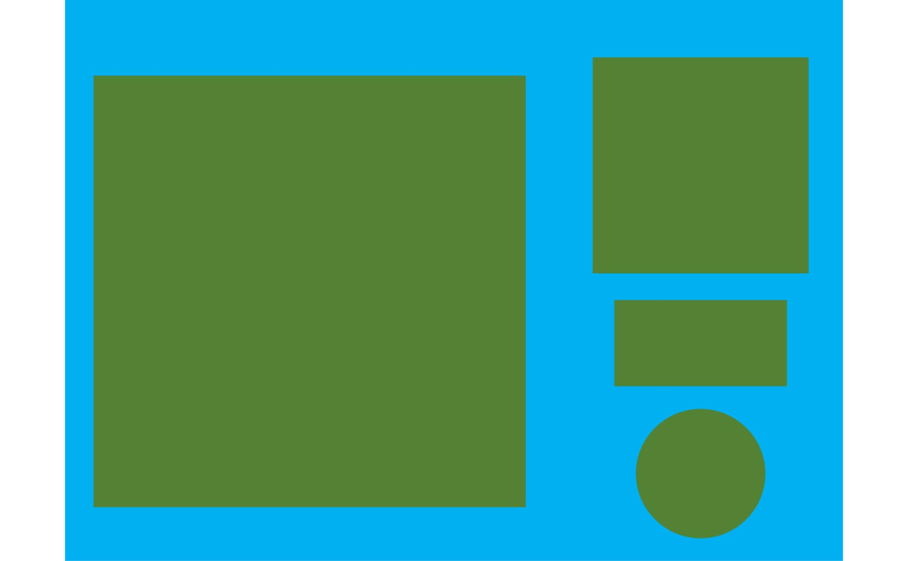

get_measures()computes object measures (area, perimeter, radius) by using either a known resolution (dpi) or an object with known measurements.plot_measures()draws the object measures given in an object to the current plot. The object identification ("id") is drawn by default.
Usage
get_measures(
object,
measure = NULL,
id = NULL,
dpi = NULL,
sep = "\\_|-",
verbose = TRUE,
digits = 5
)
plot_measures(
object,
measure = "id",
id = NULL,
hjust = NULL,
vjust = NULL,
digits = 2,
size = 0.9,
col = "white",
...
)Arguments
- object
An object computed with
analyze_objects().- measure
For
plot_measures(), a character string; forget_measures(), a two-sided formula, e.g.,measure = area ~ 100indicating the known value of objectid. The right-hand side is the known value and the left-hand side can be one of the following.areaThe known area of the object.perimeterThe known perimeter of the object.radius_meanThe known radius of the object.radius_minThe known minimum radius of the object. If the object is a square, then theradius_minof such object will beL/2whereLis the length of the square side.radius_maxThe known maximum radius of the object. If the object is a square, then theradius_maxof such object according to the Pythagorean theorem will beL x sqrt(2) / 2whereLis the length of the square side.
- id
An object in the image to indicate a known value.
- dpi
A known resolution of the image in DPI (dots per inch).
- sep
Regular expression to manage file names. The function combines in the
mergeobject the object measures (sum of area and mean of all the other measures) of all images that share the same filename prefix, defined as the part of the filename preceding the first hyphen (-) or underscore (_) (no hyphen or underscore is required). For example, the measures of images namedL1-1.jpeg,L1-2.jpeg, andL1-3.jpegwould be combined into a single image information (L1). This feature allows the user to treat multiple images as belonging to a single sample, if desired. Defaults tosep = "\\_|-".- verbose
If
FALSE, runs the code silently.- digits
The number of significant figures. Defaults to
2.- hjust, vjust
A numeric value to adjust the labels horizontally and vertically. Positive values will move labels to right (hjust) and top (vjust). Negative values will move the labels to left and bottom, respectively.
- size
The size of the text. Defaults to
0.9.- col
The color of the text. Defaults to
"white".- ...
Further arguments passed on to
graphics::text().
Value
For
get_measures(), ifmeasureis informed, the pixel values will be corrected by the value of the known object, given in the unit of the right-hand side ofmeae. Ifdpiis informed, then all the measures will be adjusted to the knosurwndpi.
If applied to an object of class
anal_obj, returns a data frame with the objectidand the (corrected) measures.If applied to an object of class
anal_obj_ls, returns a list of classmeasures_ls, with two objects: (i)results, a data frame containing the identification of each image (img) and object within each image (id); and (ii)summarya data frame containing the values for each image. If more than one object is detected in a given image, the number of objects (n), total area (area_sum), mean area (area_mean) and the standard deviation of the area (area_sd) will be computed. For the other measures (perimeter and radius), the mean values are presented.
plot_measures()returns aNULLobject, drawing the text according to the x and y coordinates of the objects inobject.
Author
Tiago Olivoto tiagoolivoto@gmail.com
Examples
# \donttest{
library(pliman)
img <- image_pliman("objects_300dpi.jpg")
plot(img)
# Image with four objects with a known resolution of 300 dpi
# Higher square: 10 x 10 cm
# Lower square: 5 x 5 cm
# Rectangle: 4 x 2 cm
# Circle: 3 cm in diameter
# Count the objects using the blue band to segment the image
results <-
analyze_objects(img,
index = "B",
lower_noise = 0.1)
plot_measures(results, measure = "id")

# Get object measures by declaring the known resolution in dots per inch
(measures <- get_measures(results, dpi = 300))
#> id x y area area_ch perimeter radius_mean radius_min
#> 1 1 668.0002 797.0006 99.98202 99.81306 39.92940 5.73220 4.99427
#> 2 2 1736.5017 452.0009 24.99543 24.91095 19.94601 2.86381 2.49131
#> 3 3 1736.5799 1295.3127 7.04751 7.04780 10.07462 1.49390 1.48194
#> 4 4 1736.5000 938.0042 7.95081 7.90034 11.90969 1.66851 0.98779
#> radius_max radius_sd diam_mean diam_min diam_max major_axis minor_axis
#> 1 7.05849 0.62885 11.46439 9.98855 14.11698 4.07824 4.07694
#> 2 3.52774 0.31432 5.72762 4.98263 7.05549 2.03847 2.03588
#> 3 1.50907 0.00396 2.98780 2.96387 3.01815 1.05964 1.05304
#> 4 2.22516 0.42384 3.33701 1.97558 4.45033 1.48321 0.87380
#> caliper length width radius_ratio theta eccentricity form_factor
#> 1 14.04537 14.11695 14.11095 1.41332 0.78286 0.02525 0.78804
#> 2 7.01071 4.99954 4.99107 1.41602 -1.56995 0.05045 0.78951
#> 3 3.00113 3.00257 2.99917 1.01831 0.45900 0.11144 0.87255
#> 4 4.43416 3.98780 1.98120 2.25267 0.00000 0.80804 0.70440
#> narrow_factor asp_ratio rectangularity pd_ratio plw_ratio solidity convexity
#> 1 0.99493 1.00043 1.99239 2.84289 1.41454 1.00169 0.75034
#> 2 1.40227 1.00170 0.99831 2.84508 1.99647 1.00339 0.74991
#> 3 0.99952 1.00113 1.27779 3.35694 1.67862 0.99996 0.90873
#> 4 1.11193 2.01282 0.99369 2.68590 1.99526 1.00639 0.83578
#> elongation circularity circularity_haralick circularity_norm coverage
#> 1 0.00043 15.94644 9.11532 0.78670 0.42739
#> 2 0.00169 15.91665 9.11125 0.78684 0.10685
#> 3 0.00113 14.40196 377.39777 0.86794 0.03013
#> 4 0.50318 17.83980 3.93664 0.69993 0.03399
# Calculated diagonal of the object 1
# 10 * sqrt(2) = 14.14
# Observed diagonal of the object 1
measures[1, "radius_max"] * 2
#> [1] 14.11698
# Get object measures by declaring the known area of object 1
get_measures(results,
id = 1,
area ~ 100)
#> -----------------------------------------
#> measures corrected with:
#> object id: 1
#> area : 100
#> -----------------------------------------
#> Total : 40.001
#> Average : 13.334
#> -----------------------------------------
# }